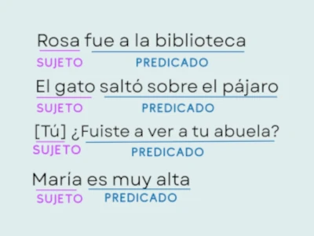

Definición de sintaxis
Parte de la gramática que estudia el modo en que se combinan las palabras y los grupos que estas forman para expresar
significados, así como las relaciones que se establecen entre todas esas unidades.
¿Qué es una oración?
La oración es el conjunto de palabras ordenadas de manera que tengan sentido completo.
Estructura de la oración
Sujeto: es la persona, animal, cosa o concepto de la que se dice algo, y a menudo es quien realiza la
acción del verbo.
Predicado: es la parte de la oración que dice algo sobre el sujeto o describe la acción que este realiza. Su núcleo es
siempre un verbo en forma personal

Tipos de sujeto
Sujeto explícito
Cuando el sujeto aparece en la oración se llama sujeto explícito o expreso.
Ejemplo: Yo salí temprano de mi casa.
Sujeto omitido
Un sujeto elíptico o también llamado omitido es aquel que no aparece explícitamente en la oración, pero que podemos suponer.
Ejemplo: Ayer comí pasta.
Oración impersonal
Las oraciones impersonales son aquellas que no tienen sujeto. Por ello, no podemos encontrar nada dentro ni fuera de la oración que
realice la acción de ese verbo que funciona como núcleo del predicado.
Ejemplo: Hoy se entrevista a los candidatos
VOLVER ARRIBA
Tipos de predicado
Predicado verbal
Es el que tiene como núcleo un verbo distinto de ser, estar o parecer.
Ejemplo: El paciente tenía insomnio.
Predicado nominal
Predicado constituido por un verbo copulativo (ser, estar o parecer) y por un atributo.
Ejemplo: Hoy está contento
VOLVER ARRIBA
 Lengua Castellana-Sintaxis
Lengua Castellana-Sintaxis